Climbing
Climbing Elbrus is a unique peak. Being Europe's highest mountain, it is quite welcoming because of its moderate difficulty. Every year, more than 10,000 people, including beginner and professional mountaineers, climb the summits of Elbrus. Let's find out what makes Mount Elbrus a hot spot for alpinists from all over the world.
In this article, we'll explore the geography of Mt Elbrus, including the
debate about its location and exact height. You’ll learn the most iconic
events and persons in the history of Elbrus's ascents, and what do the Nazis
have to do with it?
So buckle up for a tour of the captivating beauty and uniqueness of Elbrus
National Park, which offers many activities beyond climbing. Investigate the
paradoxes and factors that make Elbrus routes both accessible and
treacherous.
Equip yourself with the knowledge needed to conquer Elbrus. Learn about
essential training, acclimatization strategies to avoid mountain sickness,
nutrition recommendations, and essential gear to ensure a safe and
successful ascent. Finally, we’ll wrap it up with travel options to reach
Mount Elbrus, a sample program to ascend its summit from the South, and why
professional guides save lives.
Why does Mt Elbrus attract mountaineers?
While not among the Earth's 100 highest peaks, Mount Elbrus excites many climbers. This summit is in the prestigious alpinist lists. Elbrus is Europe's highest mountain, so it’s included in the list of Seven Summits. It comprises the highest peaks of all 7 continents ranked by elevation. are:
- Everest in Asia 8,849 m (29,032 ft)
- Aconcagua in South America 6,961 m (22,838 ft)
- Denali in North America 6,194 m (20,322 ft)
- Kilimanjaro in Africa 5,895 m (19,341 ft)
- Elbrus in Europe 5,642 m (18,510 ft)
- Vinson Massif in Antarctica 4,892 m (16,050 ft)
- Kosciuszko Peak in Australia 2,228 m (7,310 ft)
Elbrus also tops the list of the ten highest mountains in Russia. You have to climb them all to win the title "Snow Leopard of Russia":
- Elbrus 5,642 m (18,510 ft)
- Dykh-Tau 5,205 m (17,077 ft)
- Koshtan-Tau 5,152 m (16,903 ft)
- Mishrigi 5,025 m (16,486 ft)
- Pik Pushkina 5,100 m (16,732 ft)
- Jangi-Tau 5,085 m (16,683 ft)
- Shkhara 5,193 m (17,037 ft)
- Kazbek 5,034 m (16,516 ft)
- Klyuchevskaya Sopka 4,754 m (15597 ft)
- Belukha 4,506 m (14,783 ft)
In addition, Mount Elbrus is a . Its last eruption occurred 2000 years ago. Elbrus is listed among the seven highest volcanoes on seven continents:
- Ojos del Salado in South America 6,893 m (22,615 ft)
- Kilimanjaro in Africa 5,895 m (19,341 ft)
- Elbrus in Europe 5,642 m (18,510 ft)
- Pico de Orizaba in North America 5,636 m (18,491 ft)
- Damavand in Asia 5,671 m (18,605 ft)
- Sidley in Antarctica 4,181 m (13,717 ft)
- in Oceania 4,368 m (14,331 ft)
What country is Elbrus located in?
Mt Elbrus is part of the Greater Caucasus mountain system. It lies between the Black and Caspian Seas. More precisely, it sits just north of the Main Caucasus Range, on the border of Kabardino-Balkaria and Karachay-Cherkessia republics. These territories were once part of the Soviet Union but have been within the Russian Federation since 1992.
Is Elbrus in Europe or Asia?
It's not easy to say which part of the world Mt Elbrus belongs to. Determining its location in Europe or Asia is a debate, hinging on where we draw the continental boundary. If you divide the two parts of the world by the Main Caucasus Range (also called the Watershed Range), then Elbrus is in Europe. And if you draw the border along the Kuma-Manych Depression, Elbrus is in Asia. In the latter case, Europe's highest peak should be considered .
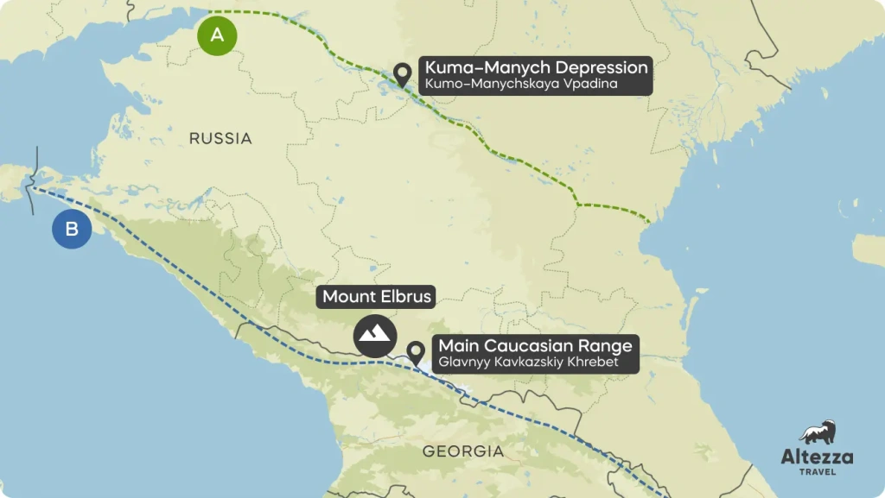
Modern geography can't offer a definitive answer to the question of which variant is correct. Traditionally, the Watershed Ridge served as the Europe-Asia boundary. However, deeper studies of the movement of lithospheric plates suggest that it's more correct to draw the boundary between Europe and Asia along the Kuma-Manych Depression.
What’s the height of Mt Elbrus?
Unlike other mountains, there is no single answer. Europe's highest mountain has two summits. The Eastern Summit stands at 5,621 meters (18,510 ft) while the West Peak is 5,642 meters (18,442 ft) above sea level. Any encyclopedia credits the height of Mount Elbrus to its Western Peak.
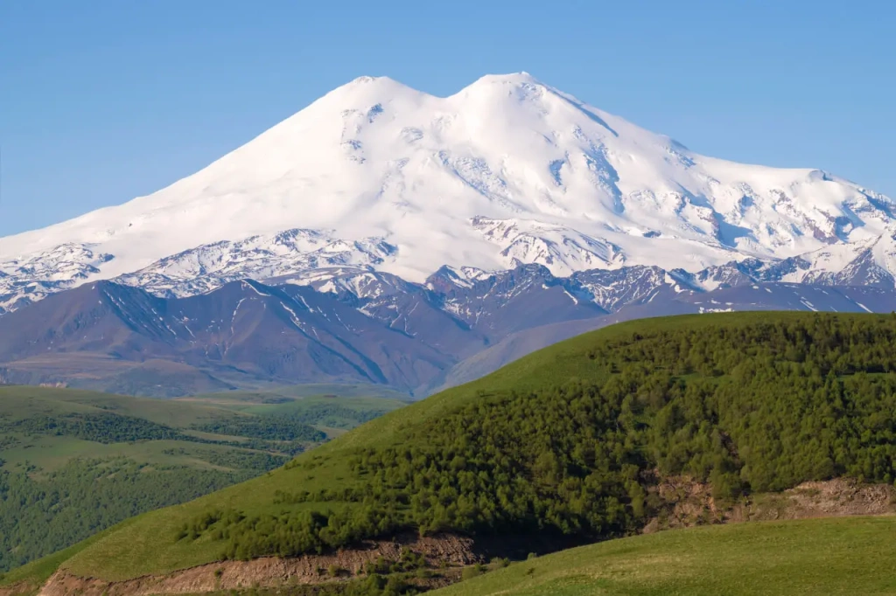
The two summits of Mount Elbrus stand roughly (0,93 mi) apart. Their conquest unfolded over 45 years. In 1829, members of the expedition of the Russian Academy of Sciences headed by General Georgiy Emmanuel climbed the Eastern Summit of Elbrus. Only in 1874, a group of British alpinists under the command of Florence Grove managed to ascend to the higher Western Summit of Elbrus.
Modern mountaineers can visit both peaks of Mount Elbrus in one expedition. The so-called "Elbrus Cross" is a challenging route, demanding physical fitness and decent alpinist skills.
Why is the mountain called Elbrus?
Mt Elbrus has many names. Each nation living nearby awarded the mountain a different name:
Karachays and Balkars call it "Mingi-Tau" — “a mountain made of a thousand
mountains”, in other words, eternal and the highest one;
Adygheans say "Oshkhamakhua" — "mountain of happiness" or "mountain of the
day". It means that the day begins when the sun illuminates Elbrus and ends
when the last sunset rays go out on it;
Abkhazians see Mount Elbrus as "Orphi-Tub" — the "mountain of the
blessed";
Georgians use two names at once: "Yalbuz" — "mane of snow" and
"Burtsimi" — "cone-shaped rising".
The origin of the most common name Elbrus has several versions. Perhaps, it's a slightly twisted Persian word "Elburz" — a "bright" or "shining" mountain. Another version states that it’s closer to the Iranian word "Alborz" — a "high mountain". Kabardino-Balkarian scientists trace it back to the Turkic "el" or "djel", meaning "wind" or "controlling the wind". This is logical because Elbrus influences the direction of winds passing nearby.
When was Mount Elbrus ascended for the first time?
Russia's highest mountain was first ascended by members of the expedition of the Russian Academy of Sciences in 1829. The expedition's goals were not primarily scientific, but military. In April 1828, the Russian Empire declared war on Turkey. The strategically crucial Caucasus region, inhabited by Circassians who supported the Turks, posed a significant threat to the Russian Empire.
This resulted in General Georgiy Emmanuel proposing to organize a
military-scientific expedition to the Caucasus mountain range, pursuing
multiple goals. Firstly, to conduct reconnaissance of the trails and fortify
positions. Secondly, to showcase military strength to Circassians and deter
them from joining the conflict. And thirdly, to find new deposits of mineral
resources, particularly lead crucial for weapon production.
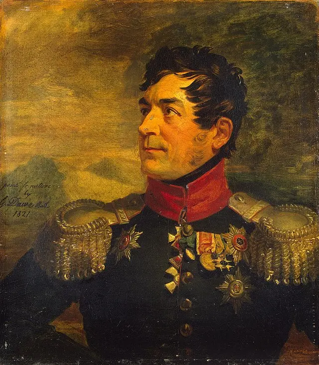
In the summer of 1829, Georgiy Emmanuel gained numerous approvals from different government institutions and the personal permission of Nicholas I. The expedition under his command finally hit the trail. Over 1,000 people, including 350 Cossacks, 650 infantrymen, and scientists of the Academy of Sciences set off on this journey.
The appearance of a large number of armed men in the mountains immediately
attracted the attention of the highlanders. General Emmanuel, however,
managed to convince them of the expedition's scientific intentions. As a
result, some of the locals joined the group of climbers.
The weather was bad with rain and fog, making the movement forward
challenging. But Emmanuel's expedition still managed to reach the mountain's
base. He announced that the first man to reach the top of Mount Elbrus
would be rewarded with 100 rubles in silver. Several daredevils went to the
impregnable mountain, but only one succeeded: Kilyar Khashirov, a Kabardian
shepherd. He anchored a pole on the top, brought two pebbles from there, and
received the promised reward.
Overall, the expedition under the command of General Emmanuel achieved all
its goals. They discovered valuable new deposits of mineral resources. They
showed the peoples of the Caucasus that they too could walk on impregnable
rocks and tangled mountain paths. To commemorate this, Emmanuel ordered an
inscription with information about the expedition to be carved on a rock
near the base camp. This place is now called Emmanuel's Rock. Soviet
alpinists discovered it only in 1932.
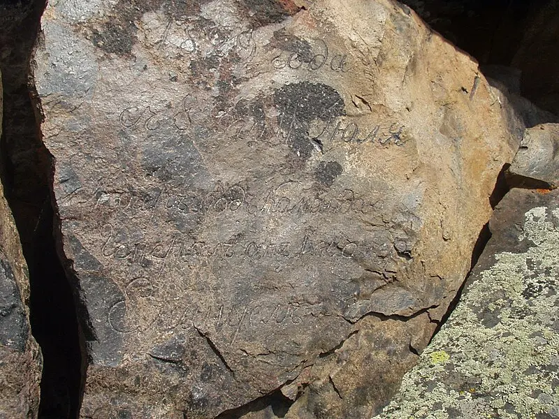
Who was the first to reach the highest West Summit?
Who was the first to reach the highest West Summit?
The English alpinist Florence Grove is considered to be the first conqueror
of the Western summit. He was a professional climber and a member of the
Alpine Club, the world's first alpinist club founded in 1857 in London.
Florence Grove conquered Europe's highest mountain in 1874. He described his
expedition in the book "Frosty Caucasus". In the mountains, the
English expedition was joined by Balkarian hunter Ahya Sottayev. The
hospitable highlanders intruded him into Grove’s company as a guide. At the
time of the ascent, Ahiya Sottayev was 86 years old. His stamina was at
the same level as his younger companions — professional
mountaineers.
Grove in his book admired his physical strength, sharp eyesight, and
knowledge of mountain trails. According to Grove, he was an excellent hunter
but a mediocre climber. For example, before reaching the summit Sottayev had
to take a longer route to the summit to bypass the glacier which separated
him from the expedition. He then met the English climbers at the summit and
they descended together.
After all, Akhiya Sottayev is credited with being the first person to conquer
both peaks of Europe's highest mountain. He visited the East Peak with
another English expedition in 1868.
What happened next?
1890-1896. Russian topographer and alpinist Andrei Pastukhov organized a scientific expedition to generate accurate maps of the Caucasus Mountains. He conquered both peaks of Mount Elbrus. His sketches and sectional planes retain scientific value even today. A group of rocks on the southern slope of the highest mountain was named after the topographer.
1891. German and Austrian mountaineers Gottfried Merzbacher and Ludwig
Purtcheller set the first record for the high-speed mountain conquest,
reaching the Western Peak in just 8 hours. Notably, Ludwig Purtcheller was
also the first person to conquer Kilimanjaro, the highest point in
Africa.
1909. The construction of the first building on Elbrus. A half dugout
for five people at an altitude of 3,200 meters (10,499 ft).
1910. Swiss mountaineers Gougie and De-Rami achieved the first ever
"Elbrus Cross" conquering both peaks in one go.
1925. Georgian climber Alexandra Japaridze became the first woman to
reach the peak of Mount Elbrus.
1928. Scientists surveyed the mineral springs of the Elbrus vicinity
to use them for recreation and medicinal purposes in the future.
1929. The "Shelter of Eleven" emerged at 4,050 meters (13,287 ft).
Initially, it was an iron-clad wooden hut for 40 people. Then replaced by a
three-story insulated hotel for mountaineers near the hut in the late 1930s.
“Shelter of Eleven” hosted climbers until it burned down due to the
carelessness of one of the tourists in 1998. There are plans to rebuild the
legendary hotel by 2025.
1932. A hydrometeorological station was established on Elbrus.
Atmospheric scientists winter in the mountains to support the station's
work.
1939. Downhill skier Vadim Gippenreyter skied down from the top of
Mount Elbrus for the first time in history.
1942. During World War II, German climbers from the Edelweiss Division
conquered both peaks of Mount Elbrus and planted Nazi flags on them.
Moreover, there was a project to rename Elbrus to "Hitler's Peak".
1943. Soviet soldiers replaced the Nazi flags with their own. The
Soviet Union prevented the Germans from gaining a foothold in the Caucasus
mountains. The Germans received no support from the main army and were
forced to leave the Caucasus at the beginning of winter 1943. In February,
despite difficult weather conditions, Soviet climbers reached both
peaks.
1946. Marking the 25th anniversary of Kabardino-Balkaria, 40 athletes
became the first post-war climbers of Mount Elbrus.
1963. The first cable car system in the Elbrus Region was launched to
Mount Cheget. It stretches for 1,600 meters (5,249 ft) and lifts tourists
650 meters (2,133 ft) up the slope. The active development of the ski resort
in Elbrus has begun.
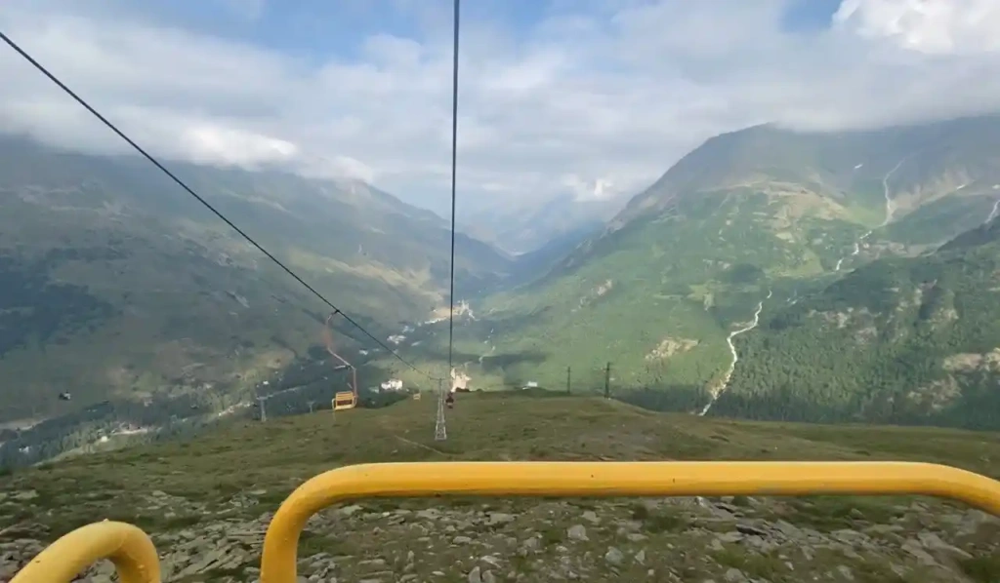
1967. A new attendance record was set with 3,224 summit attempts, including a remarkable 2,536 people reaching the mountain's summit on a single day for the 50th anniversary of the October Revolution.
Since then, Mount Elbrus has continued to flourish as a tourist destination. New cable car systems, high-altitude hotels, and tourist camps were built there.
What's Prielbrusye and why does it attract tourists?
Prielbrusye (vicinity of Mount Elbrus) is a part of Kabardino-Balkaria at the root of two mountains — Elbrus and Cheget. In 1986, Prielbrusye was declared a national park. Plenty of rare species of animals and birds live here.
Among the species traditional for European forests there are Weasels, Brown Bears, and Roe Deer. Among are the West Caucasian tur and Caucasian Otter. Endemic birds include the Caucasian Snowcock and Grouse. Some Caucasus dwellers are listed in the Red List of Threatened Species: Peregrine Falcon, Leopard, Vulture, and Caucasian Wildcat.
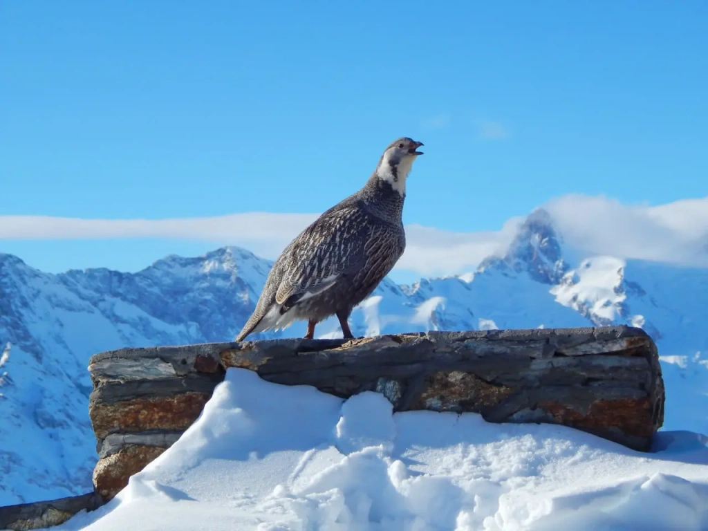
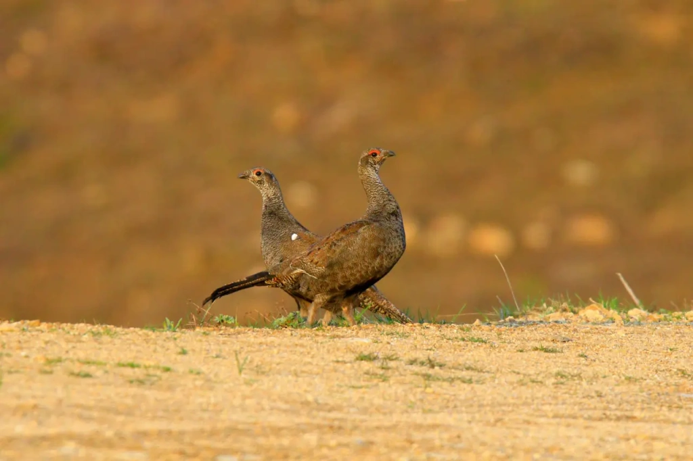
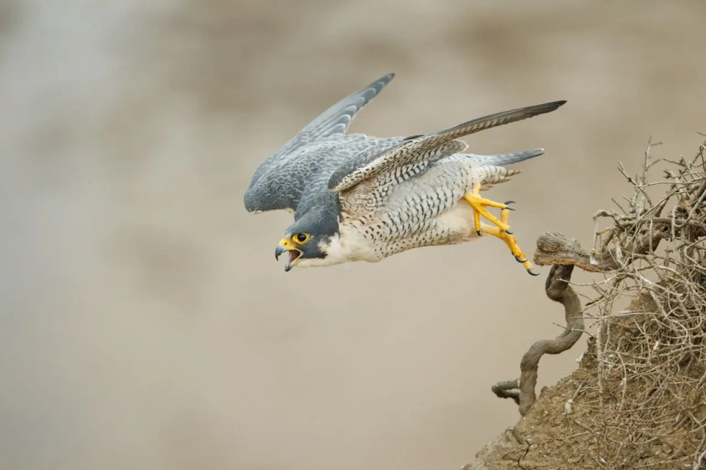
The flora of Mount Elbrus is also very diverse due to the diversity of altitudes and landscapes. Coniferous forests gradually turn into alpine meadows. Rare herbs and shrubs grow here: several species of Bellflowers, Caucasian Lilies, and Saxifrage. The Caucasian Rhododendron is especially attractive to tourists. It's an evergreen shrub blooming in the middle of June with white or delicate pink flowers.
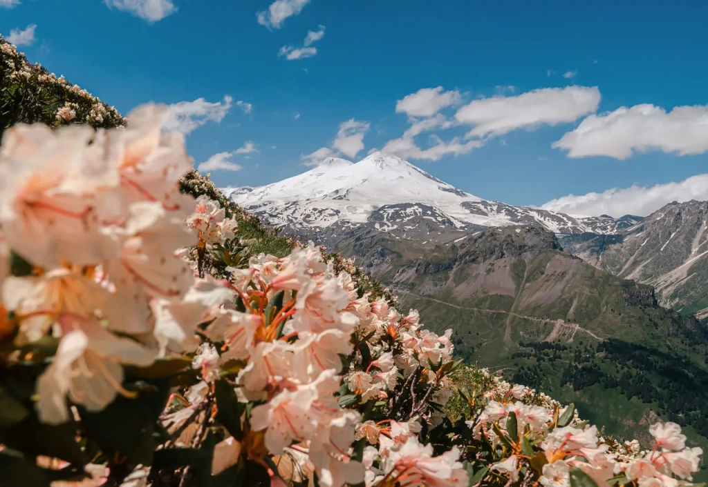
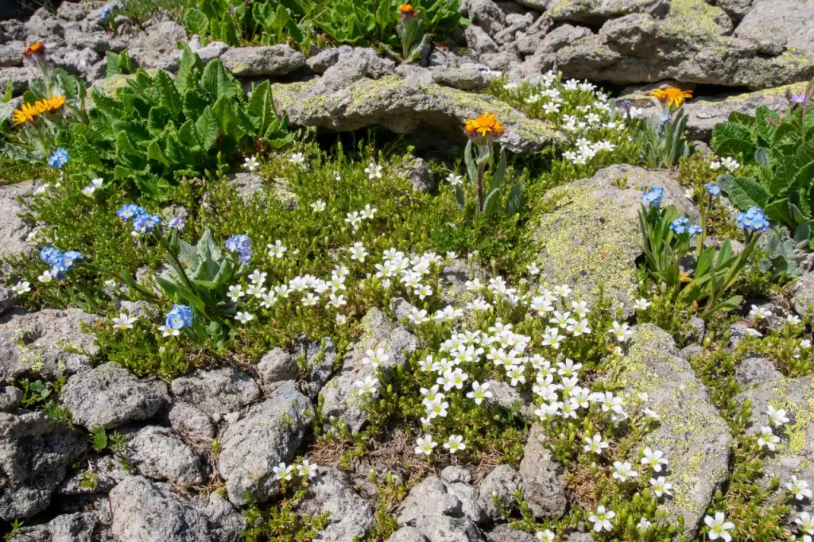
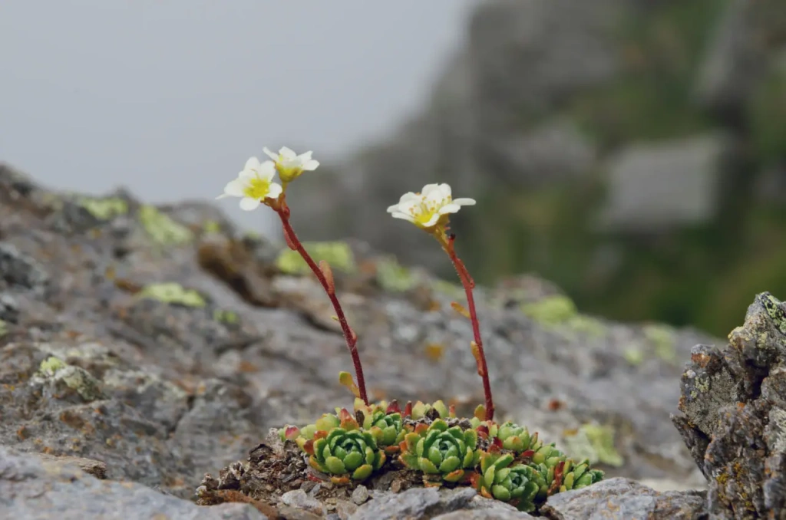
The climate in Prielbrusye is mild and moderately continental. While winters average a comfortable -6°C (21°F), summers bring refreshing +15°C (59°F) days. This allows for skiing well into April or May, thanks to the year-round snowcapped peaks. Just like in other mountains, the atmospheric pressure here is low and the sun is intense. This means that you should use special lipstick and sunscreen, both with and wear sunglasses with category 4 UV protection even in winter.
A to-do list in the Elbrus Region, excluding mountaineering.
Skiing
The ski season in Prielbrusye kicks off in November and lasts until April-May. There are routes of any difficulty here. The green ones are for inexperienced skiers whereas the black ones are listed among the world's most challenging slopes, suited only for self-confident thrill-seekers. There are wide slopes on Elbrus offering a relaxed descent, while the most treacherous trails can be found on the lower slopes of Cheget Mountain. In total, there are about 35 kilometers (21,75 mi) of groomed ski trails served by 9 diverse ski lifts and cable cars.
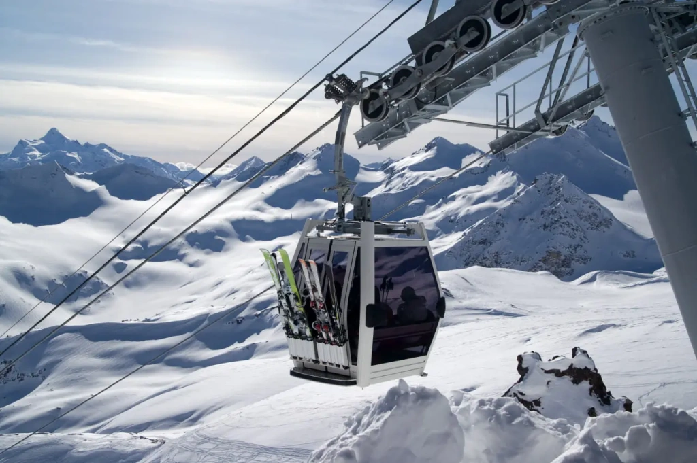
Trekking
As the ski season ends, the trekking season begins. The best time for trekking in the Elbrus Region is from May to September. During this season the weather is warm, sunny, and typically cloudless. Trekking in Prielbrusye is suitable for people with almost any level of fitness. You can go on a real hike with a heavy backpack, walk long distances, and stay in a tent overnight. Or you can stay in a health resort and go out for day walks in the picturesque surroundings. Also, you can visit remote attractions accessible by car or minibus.
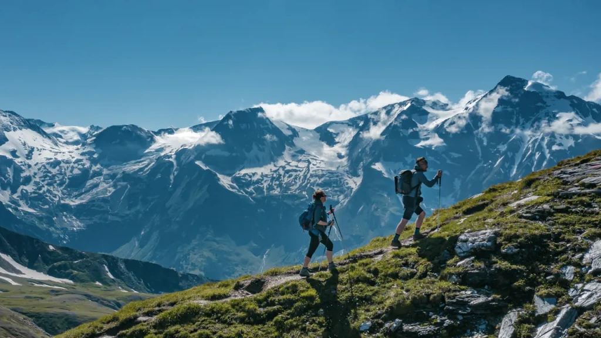
Rest and improve your health at Mineral Hot Springs
Rest and improve your health at Mineral Hot Springs
There are about 100 mineral springs in the Elbrus Region. A network of hotels
and sanitariums was built around them. If we believe the advertisements of
numerous health resorts, mineral water cures almost everything ranging from
stomach diseases to problems with the nervous system.
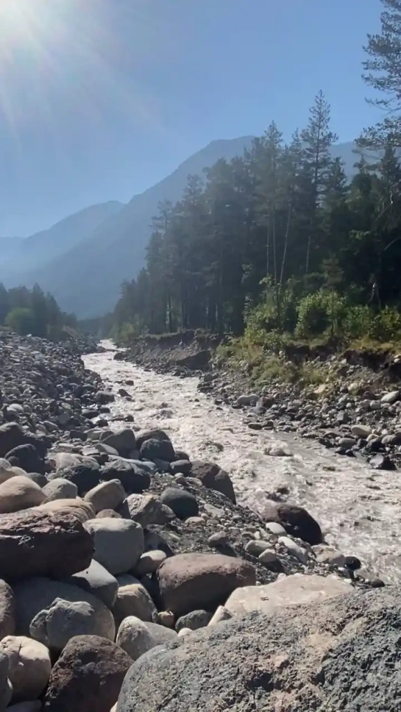
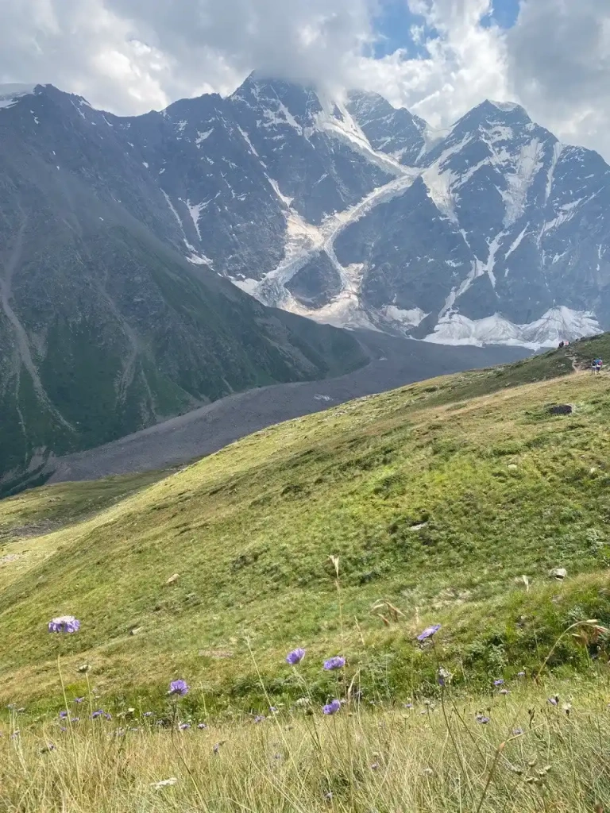
Is it true that Elbrus is dangerous?
Articles about this mountain often call its peak insidious. Indeed, climbing carries risks, and accidents do occur causing injuries or even death. However, there is a lack of comprehensive statistics. According to Boris Tilov, head of the search and rescue service, 15-20 people die on the mountain annually. Almost all accidents involve unaccompanied tourists attempting the summit alone, without professional guides or route documents.
An estimated 10,000 to 12,000 individuals ascend Mount Elbrus each year. The
mortality rate is only about 0.1%. For comparison, the mortality rate on
Everest, the highest peak on the planet, is about 3%. The most
dangerous summit in the world is Annapurna I, located in the Himalayas.
Almost 26.7% of climbers attempting it lose their lives there.
Is it difficult to climb Elbrus?
There is no unambiguous answer to this question. Currently, around 10 routes to the peak exist, and they vary in difficulty. Mountaineers use special systems to categorize routes depending on the technical skills required. Currently, around 10 Elbrus routes exist. Some of them are relatively simple to climb. These easier routes require minimal training and gear. According to the Russian system, such routes fall under The international UIAA system categorizes standard and other routes as of difficulty in rock climbing.
One of the most challenging routes to climb Elbrus boasts a Russian 5A classification. It consists mainly of sections of grade III and IV difficulty, including V difficulty parts according to the international classification. This means that the steepness of the ascent is more than 45 degrees. Some of its sections require a full set of climbing equipment. This route is for well-prepared experienced climbers only.
Interestingly, mountain height doesn't always dictate difficulty. Let's
compare Elbrus and Kilimanjaro, Africa's highest peak popular among
beginners, located in Tanzania. Kilimanjaro is 5,895 meters (19,341 ft)
above sea level whereas Elbrus hits 5,642 meters (18,510 ft). Kilimanjaro is
higher, but technically easier to climb.
Firstly, Kilimanjaro's proximity to the equator brings warmer, more stable
weather compared to Elbrus. Secondly, climbing Kilimanjaro demands minimum mountaineering
skills. No ice there, crampons and ice axes are also unnecessary, making it
technically easier.
What are the most popular routes to reach the peak of Elbrus
South route
This classic route is the easiest to climb to the top of Mount Elbrus. The advantage of this route is its good infrastructure. You can ascend to Garabashi station at 3,800 meters (12,467 ft) by cable car. This allows you to save energy. Tourists usually spend the night in the “Bochki” (Barrels) or “LeapRus” alpine shelters here.
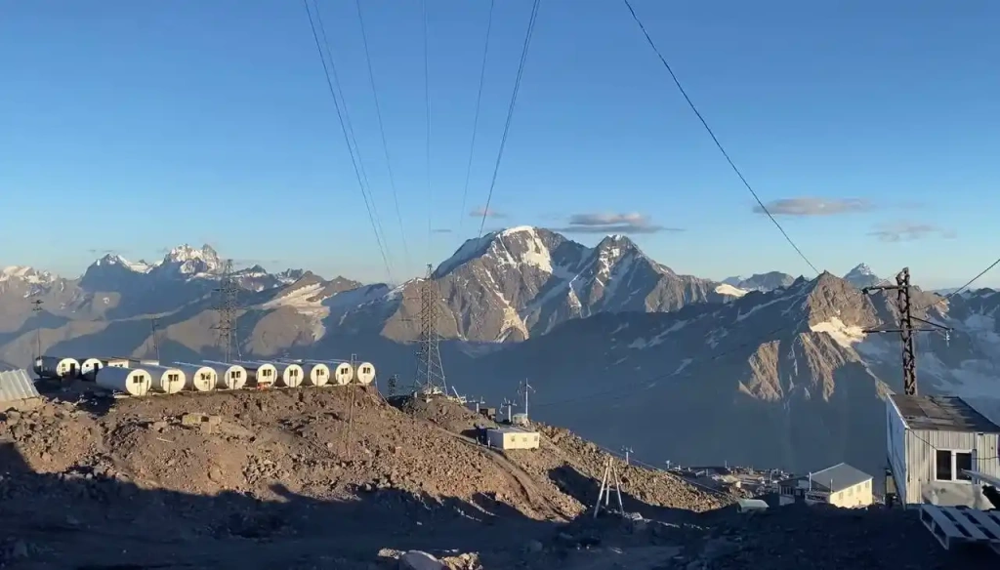
Most climbers start the ascent day with a night snow groomer ride to Pastukhov Rocks, perched between 4,700 and 5,100 meters (15,420 - 16,732 ft). Snow groomers also ensure the safety of tourists. In emergencies, medics and rescuers use them to reach injured climbers as quickly as possible. From here the final climbing on the summit begins.
Reaching the summit via the South route typically requires a 7-8 hour ascent,
followed by a 3-4 hour descent. You'll traverse Pastukhov Rocks and long
(slanted
shelf) towards the and
brace for , a section
with a challenging 30-degree incline. Finally, the
will lead you to the Western Summit. Though rare in summer, be prepared for
stretches of clear ice along the way.
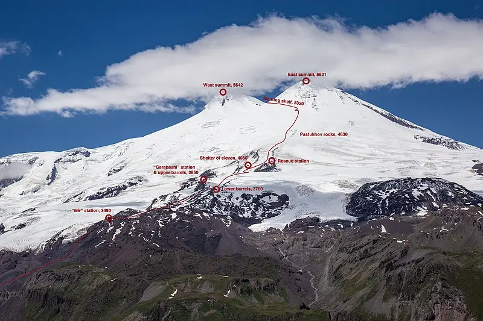
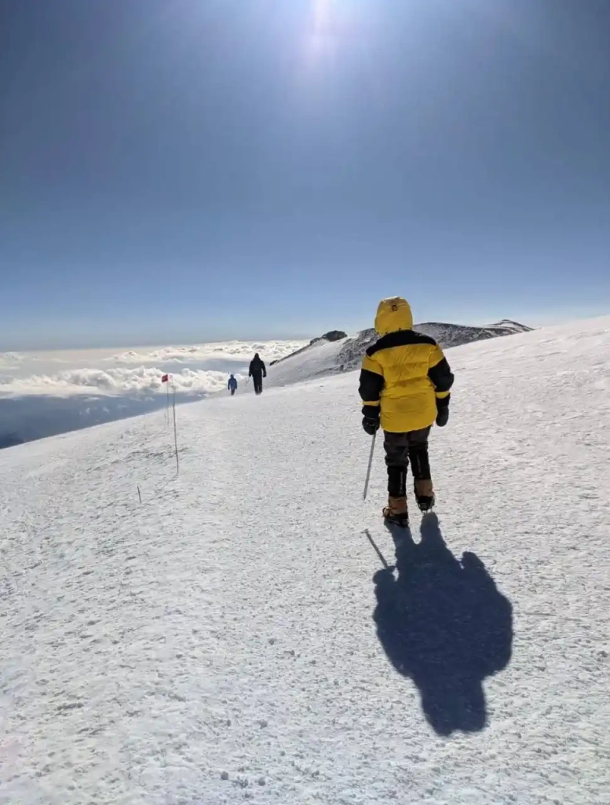
The South side route holds a 1B (Russia) or I-II (international) difficulty rating. Climbers wear crampons all the way. You should learn to use an ice axe, which is needed for several sections of the climbing. The perimeter ascent from the "saddle" through the "perils" toward the West Summit requires focus. Also, the long demanding descent down the steep slope at an angle of 30 degrees requires caution, because it’s easier to make a mistake while being exhausted after reaching the peak.
North route
This route retraces the steps of General Emmanuel's expedition — the first conquerors of Mount Elbrus. It passes through the North Shelter and the Lents Rocks to the East Summit. Climbing the West Peak from the North is impractical due to the distance. There is also the "Elbrus Cross" route — experienced climbers first ascend the East Summit and then traverse across the saddle to climb the West Peak.
Since Elbrus is a volcano, it has a symmetrical shape. In terms of slope
steepness, the Northern route is similar to the Southern route. However,
it's much more difficult to climb Elbrus from this side. Firstly, it lacks
ski lifts, requiring trekking the whole way up. Secondly, the last
high-mountain shelter on the North side sits at 3,800 meters (12,467 ft).
You have to start the climbing from here. There are no snow groomers or
snowmobiles. This means that alpinists need to organize overnight stays in
tent camps, which is physically demanding.
This route holds a 2A (Russia) or II (international) difficulty rating in
classification.
How do you prepare for the climb?
Exercise regularly
Conquering the summit is physically demanding. You should train both physical and mental fortitude in advance. Your training program should be balanced. Firstly, you need cardio to build endurance. Embrace activities like walking, running, swimming, and cycling. These sports train your heart, lungs, and muscles for sustained climbing.
Secondly, you need to build general strength. Simple exercises like push-ups,
squats, abs, and arm workouts will do. Remember, overtraining is unnecessary
— excess muscle mass consumes more oxygen, making high altitudes even
tougher. The ultimate goal is to achieve a balanced physical shape.
Learn how to use the equipment
The exact set of equipment varies with your chosen route. In any case, it's crucial to understand what exactly you'll need and how to use all the right gear correctly in advance. It's not just about specific mountaineering equipment: crampons, carabiners, ice axes — your clothing is equally critical. The ascent to Mount Elbrus takes place in difficult weather conditions. You need to be ready and dress to avoid both cold and sweat.
Stock up on extra nutrition
Stock up on extra nutrition
In the mountains, a person expends several thousand calories per day.
Although meals are usually included in the climbing package, it's worth
stocking up on plenty of high-calorie solid snacks.
Sports energy gels, bars, cookies, nuts, and chocolates are suitable for
trekking and acclimatization. In addition, Cola-Cola is indispensable in the
mountains, the sugar in its composition provides the body with quick energy.
Sweet tea from a thermos will also give you strength.
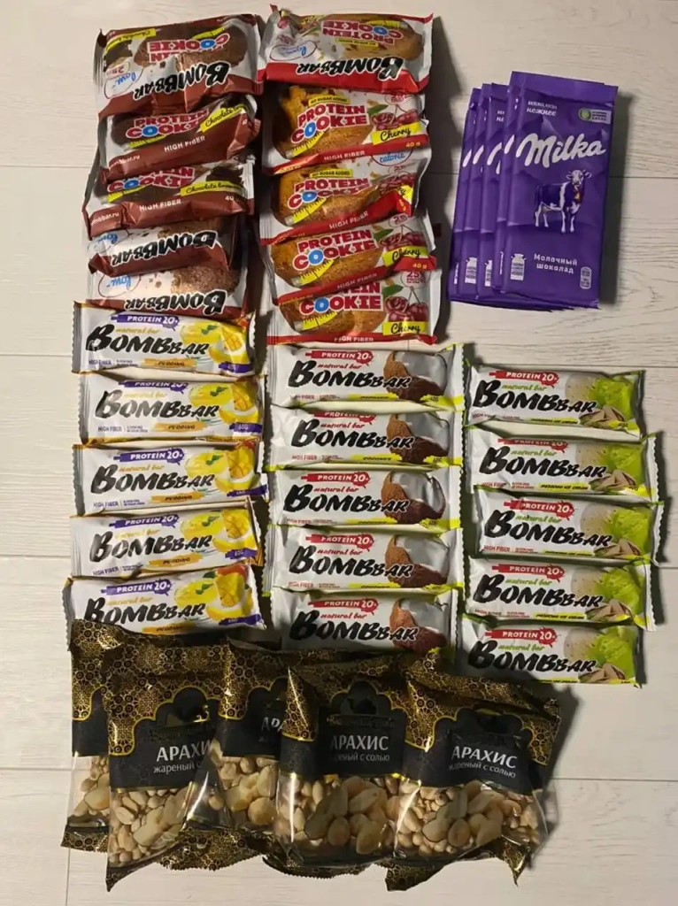
On the summit day, take 1 liter of Cola-Cola and a full thermos of sweet tea with you. Cut all the snacks into small pieces, as at high altitudes they get icy, and put them in portions. This will be enough to regain your strength during the stops.
Gather information about the ascent
The more you know about the ascent, the easier you will complete it. For example, you need to be prepared for acclimatization. Knowing the difference between tolerable discomfort symptoms and dangerous altitude sickness can make your climbing smoother and safer. Ask your guide to clarify beforehand the essential medications and hygiene products you'll need.
Which equipment will you need?
In this section, we'll talk about the essential set of equipment for beginner climbers who’ve chosen either the classic Southern route or the more demanding Northern one.
All in all, you can buy and bring equipment with you OR you can rent at one
of the equipment rentals in Prielbrusye.
Footwear
You'll need insulated high-altitude mountaineering boots. They are
tall and stiff, providing ankle support and a snug fit. The boots must fit
in size and feel tightly on the foot, with room for thick woolen socks.
The soles of high-altitude mountaineering boots are unbending, preventing the
crampons from slipping. Crampons are special toothy devices for shoes. They
offer a solid grip that prevents you from slipping the slope. Crampons are
important, even on easy mountain routes.
You might also need trekking boots for acclimatization hikes in lower
attitudes with no snow. They'll prevent your feet from injuries while
walking on rocky surfaces.
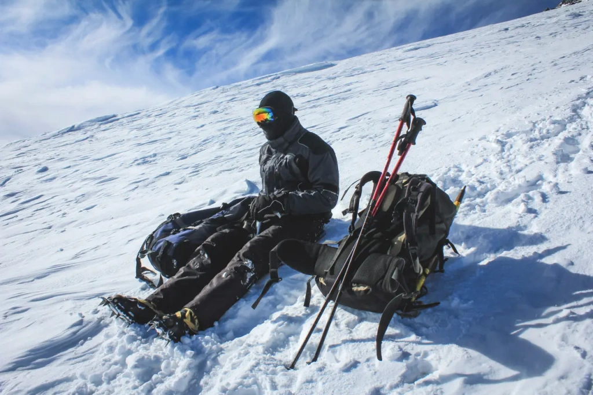
Clothes
You'll experience significant temperature swings, soaring to +20°C (+68°F) by day and plummeting to -25°C (-13°F) at night. The key is to dress in several layers. The base layer includes thermal underwear. Then take on the fleece suit, and shield yourself with a wind+waterproof membrane coat and pants.
The outer layer should be a warm down-padded or synthetic coat and ski pants
made of Gore-Tex. You'll also need thick merino wool socks, fleece and ski
gloves, down-padded mittens, a fleece and woolen hat, and a buff, or a
balaclava.
Climbings usually start at 1-2 am, the coldest hours of the whole day. The
more layers you have, the better. Initially, put all the layers on. Then you
can adjust to changing weather conditions, adding or removing pieces as
needed. Keep extra clothes in your backpack.
Accessories
Rocks, snow, and ice may fall down the slopes. For safety reasons, it's better to climb Elbrus wearing a helmet. A light and comfortable one with ventilation holes will be suitable.
As the ascent starts at night, a head torch is a necessity. Don't
forget a set of spare batteries.
At high altitudes, the mountain sun may cause eye damage. Casual sunglasses
won't help against the intense sun fit. You'll need special mountaineering
sunglasses with UV category 4 protection and protective side shields.
They must sit tightly on the face. For extra wind protection, consider a
ski mask with UV protection.
Additional equipment
Trekking poles and ice axes make climbing much easier and safer. They provide stability and support on challenging terrain.
A harness and carabiners are mandatory safety equipment,
allowing you to walk in a rope team with your guide or fellow climbers.
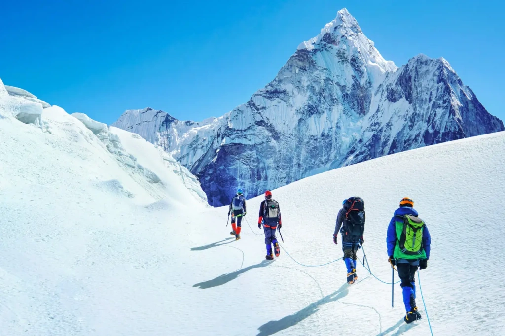
Backpack
You need a large 70-120 liter backpack. Proper fit and ample capacity are key to carrying your personal belongings. A good idea would be to research several reviews of backpacks of different brands and sizes. Then decide what exactly you need. Also, you'll need a special raincoat cover to protect your belongings from moisture in case of stormy weather.
Which season is best for the Elbrus ascent?
The most friendly climbing season is summer. During the daytime, the air warms up to +20 °C (+68 ºF). This temperature can be experienced in the alpine shelters’ area. However, the nighttime temperatures drop to -10 °C (+14 °F) on average. The summit remains snow-capped year-round.
When climbing Elbrus, you should be prepared for sudden weather changes. You
may be lucky and it may be quiet and clear. Thunderstorms, strong winds, and
fog are often common. That's why most summit itineraries reserve an extra
1-2 days to adapt to turbulent weather. It happens quite often that an
experienced guide turns the group around halfway to the summit due to
approaching storms.
Most of the climbing expeditions take place in July and August, thanks to
favorable weather and vacation schedules. If you want to see a deserted
mountain, it's better to climb in September, with slightly cooler but still
climbable weather.
Only experienced alpinists climb in late fall and winter. As part of their
training program, they test their equipment and prepare for even higher, far
colder Himalayan ascents.
How do you travel to the highest peak of Europe?
Mount Elbrus is located on the territory of the Russian Federation. As of December 2023, residents of the countries require no entry visa. The maximum length of stay and validity period vary depending on the country.
Learn more about the Russian visa requirements for your country on the website of the Consular Department of the Ministry of Foreign Affairs of the Russian Federation. You can also or an electronic visa available for residents of 55 states. Residents of other countries will have to apply for a visa at a consulate of the Russian Federation located in their country.
Tourists come to Elbrus by plane or train. The nearest cities are Nalchik and
Mineralnye Vody. They both have airports and railway stations, with
Mineralnye Vody offering regular international flights.
From either city, embark on a 3-hour drive through the beautiful Baksan
Valley to Terskol, the village closest to the mountain. You can choose from
comfortable shuttle buses, taxis, or transfers arranged by travel agencies.
The road from Mineralnye Vody to Terskol will take about 3 hours.
How to acclimatize in the mountains and avoid altitude sickness?
With an increase in altitude, the atmospheric pressure drops. This results in a decreased amount of oxygen entering the body. A person needs time to acclimate and adjust to a new environment. Feeling a bit sick for the first few days is perfectly normal.
At an altitude of 1,500-2,000 meters (4,921 - 6,562 ft), the pulse rate
increases, blood pressure rises, and a person gets tired faster. At an
altitude of 2,500-3,500 meters (8,202 - 11,483 ft), shortness of breath and
lethargy may appear. You may develop altitude sickness if you go even higher
without proper acclimatization. This is a condition when nausea, headache,
and vomiting appear due to a lack of oxygen. In the worst cases, swelling of
the brain or lungs may develop.
To avoid altitude sickness and help your body acclimate, there are a few
rules to follow:
- Take your time and climb slowly. Most people need a few days to adapt to altitudes up to 3500 meters (8,802 ft). The higher the altitude, the longer it takes to acclimate.
- Maintain a healthy lifestyle. Get enough sleep, eat well, drink more water, and don't abuse alcohol.
- Carefully monitor your health condition. Listen to your body, if you notice signs of altitude sickness, you should descend to a lower height and rest for a few days. This is usually enough to normalize your well-being
What's it like to conquer Elbrus in a group?
What's it like to conquer Elbrus in a group?
The exact plan may vary depending on the season, weather, and group
composition. All the standard route programs look quite the same.
Day 1: Group meeting, equipment check, discussion of the Elbrus ascent
plan, rest.
Day 2-3: Trekking acclimation hikes. The group members gain altitude
up to 3,000-3,500 meters (8,802 - 11,483 ft) and then descend back to the
camp for an overnight stay. This helps to adapt and avoid mountain sickness.
In addition, there is an opportunity for the newcomers to test their
equipment and learn the safety rules during the test hikes.
Day 4: Take a lift by cable car to the alpine shelter at 3,700-3,800
meters (12,139-12,467 ft). Acclimation at a new impressive altitude. This is
where you'll start on the summit day.
Day 5: Acclimatization hikes. If you choose to climb from the South
side, you'll typically head towards Pastukhov Rocks, reaching 4,800 meters
(15,748 ft), before returning to camp.
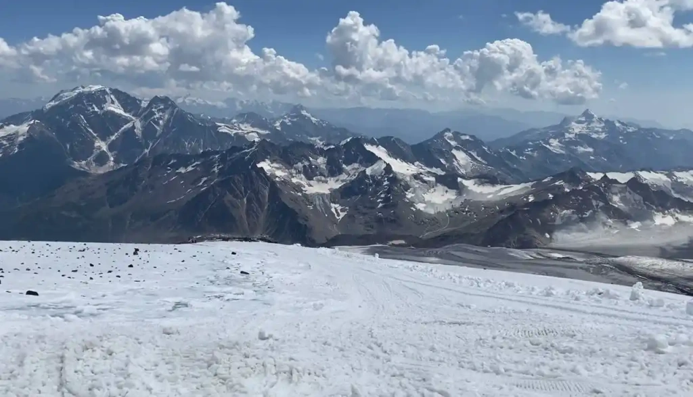
Day 6: Rest before the final ascent.
Day 7: The summit day. The group leaves the camp around 1:00 am. The
guide determines the exact time based on weather conditions. The typical
schedule is to be on the summit early in the morning and by lunchtime to
descend to the camp to avoid worsening weather. In general, the route takes
about 15 hours.
Day 8-9: Reserve days are the backup plan in case bad weather delays
your summit bid.
Day 10: Departure.
Why should you be teamed with professionals?
While technically an easy climb on paper, Elbrus' "simplicity" masks objective dangers. The normal route is pure trekking. People just walk all the way. There is no need to grab the rock with your hands or install special climbing anchors.
This deceptive accessibility attracts many beginners, who often form groups
with mixed physical fitness levels. They might lack crucial skills like
interpreting weather cues, dressing appropriately for changing conditions,
and navigating mountain terrain.
However, anything can happen even during a climb planned to the last detail.
One of the objective dangers is a sudden change of weather. A blizzard may
start and cause near-zero visibility and plummeting temperatures.
The second danger is altitude sickness. It can strike beginners despite the
gradual ascent and the standard precautionary measures the guides take. Such
a condition makes you feel bad and have poor judgment. That means a person
can let the whole group down.
To make the ascent happen, it's crucial to go with a team of guides
(typically 1 per 3 climbers). Professionals in the group will help everyone
to reach the top of the mountain. If someone realizes that he’s run out of
strength, the guides can split up and bring part of the group back to the
camp.
Things to consider in case of solo climbing
If you plan to climb the summit or hike Mount Elbrus area alone, please, inform the Ministry of Emergency Situations (EMERCOM) of Russia 10 days before the trip. You can either visit their Terskol office or submit details online. The application form should include the info on the group’s leaders and members, their contact numbers, and your detailed route. However, keep in mind that climbing alone carries significant risks and is not generally recommended to anyone.
All content on Angelino Adventures is created with expert insights and thorough research, in line with our Editorial Policy.


Want to know more about Tanzania adventures?
Get in touch with our team! We've explored all the top destinations across Tanzania. Our Kilimanjaro-based adventure consultants are ready to share tips and help you plan your unforgettable journey.
 Tanzania Safaris
Tanzania Safaris
 Kilimanjaro and other mountains
Kilimanjaro and other mountains
 About Angelino Adventures
About Angelino Adventures
 Tanzania Islands
Tanzania Islands